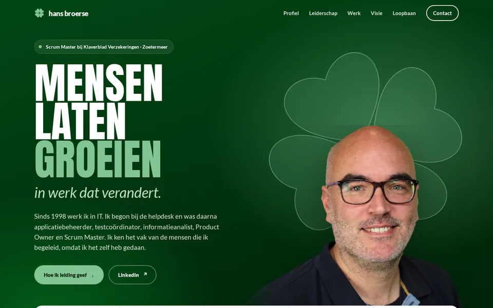
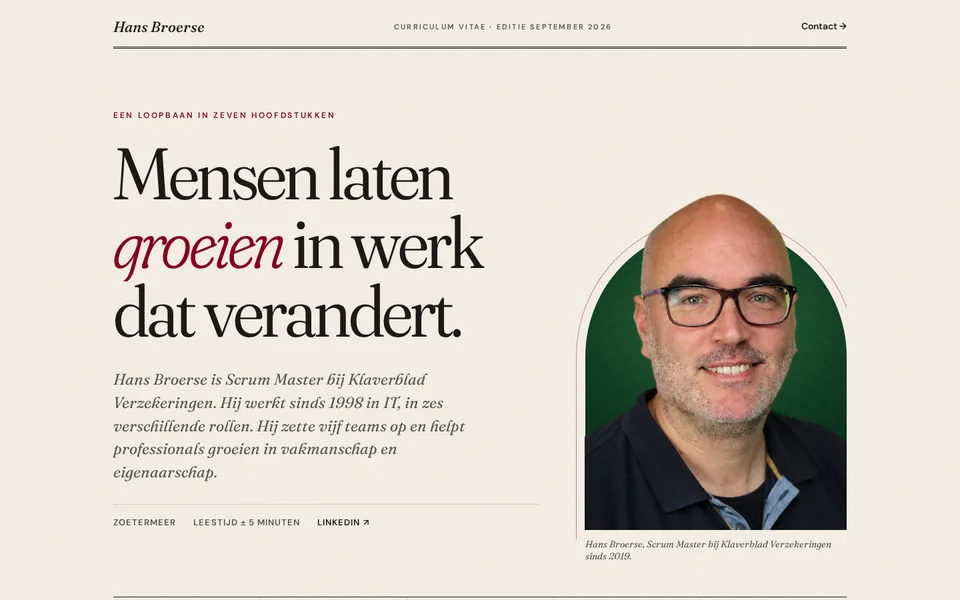
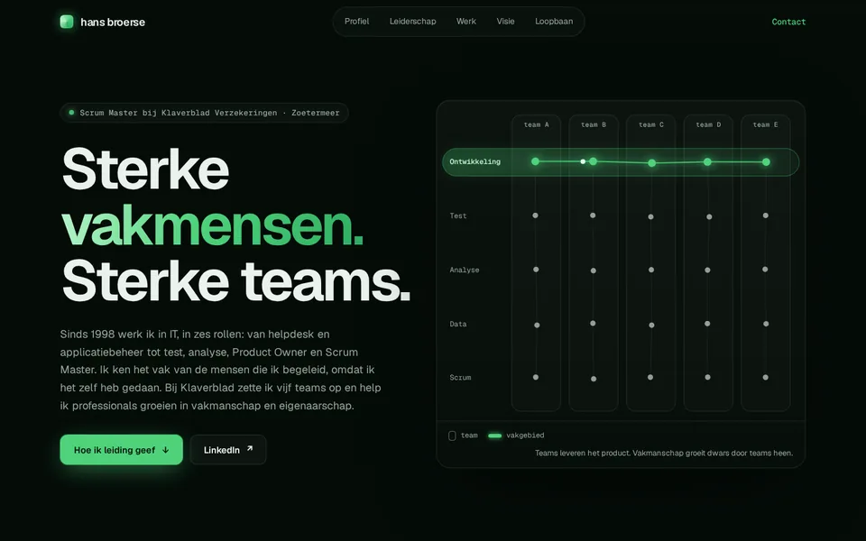

Drie varianten voor hansbroerse.nl
Alle drie gericht op de rol Chapter Lead, met dezelfde feiten en dezelfde teksten als basis. Het verschil zit in de vormgeving, de toon en hoe dicht ze bij de huisstijl van Klaverblad liggen.

Variant A
Klaver
Het dichtst bij de huisstijl van Klaverblad. Donkergroen, krachtige koppen en een klavertje vier als beeldmotief.
- Vier leiderschapsprincipes als de vier bladen van één klaver
- Groeiende staafgrafiek van zes rollen en een groeipad als tijdlijn
- Vrijstaande foto voor een draaiende klaver

Variant B
Hoofdstukken
Een redactioneel magazine. Je loopbaan in zeven hoofdstukken, met het bordeauxrood en groen uit het Klaverblad-logo.
- Chapter Lead als woordspeling: de site is een boek
- Tekst die oplicht tijdens het lezen, een interview met vraag en antwoord
- Sluit af met "Wordt vervolgd."

Variant C
Chapter
Donker en technisch, voor een IT-publiek. Het meest expliciet over de rol, met een levende visualisatie van teams en vakgebieden.
- Interactieve matrix: vakmanschap dwars door teams heen
- Bento-cijfers, spotlight-kaarten en gestapelde werkkaarten
- Groene gloed op het merkgroen van Klaverblad
Ter vergelijking: de huidige site. De varianten zijn niet geïndexeerd en niet gelinkt vanaf de huidige site.